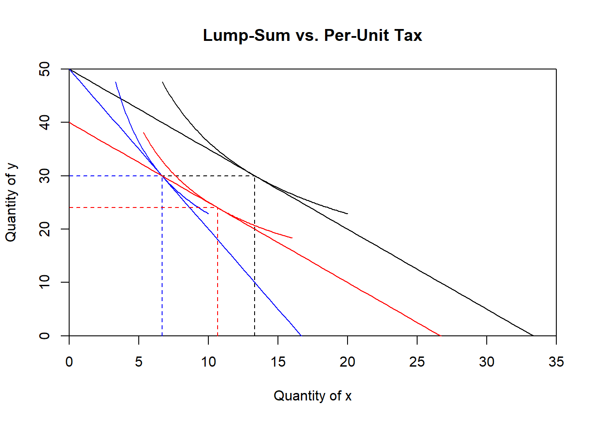

3.5 Examples
Some of the examples illustrated below are covered in the video Consumer Theory: Applications.
3.5.1 Theoretical Examples
Switching food delivery services: Pamela uses a food delivery service which sends you the ingredients for meals and she just needs to combine and cook them at home for a nice meal. Currently, she purchases this services 20 times a month. Her income is $1,000 per month and the meals cost $20 per meal. All other goods cost $10 per unit. A new online service offers similar meals but charges a flat fee of $200 per month plus $10 per meal. This package lets her consume the same amount of food. However, because the slope of the budget constraint is different, the initial choice is not optimal anymore. By reallocating her consumption, she can get on a higher indifference curve. Panel ``Food Delivery’’ in Figure \(\ref{fig:CON_fixedprice_tax}\).
Figure 3.6: Theoretical examples about individual choice. Panel (a) demonstrates the switch from a per-unit purchasing system to a scheme which has a fixed cost and a lower per-unit price for subsequent purchases. Panel (b) contrasts the difference between a lump-sum tax and a per-unit tax.
Policy Example of a Lump-Sum Tax versus a Per-Unit Tax: A per-unit tax is the institution of an excise tax on some (but not all) goods a consumer purchases. A lump-sum tax is the collection of a single sum, independent of the consumer’s choices. Assume the following notation: \(p_x\) and \(p_y\) as the price of goods \(x\) and \(y\), \(M\) as the income, \(t\) as the per-unit tax, \(T\) as the lump-sum tax. Table \(\ref{table:lumpsumtax}\) and panel ``Lump-Sum vs. Per-Unit Tax’ in Figure \(\ref{fig:CON_fixedprice_tax}\) represent this problem. The graph in figure \(\ref{fig:CON_fixedprice_tax}\) is based on the following parameters: \(M = 100\) (income), \(P_x = 3\), \(P_y = 2\), \(t = 3\) (per unit tax), and the utility function is written as \(U(x,y) = Q_x^a \cdot Q_y^{1-a}\) with \(a=0.4\).\

| Budget line | Choice | |
|---|---|---|
| Original | \(P_x \cdot Q_x + P_y \cdot Q_y = M\) | (\(x_1^\star,y_1^\star\)) |
| Per-unit | \((P_x + t) \cdot Q_x + P_y \cdot Q_y = M\) | (\(x_2^\star,y_2^\star\)) |
| Lump-sum | \(P_x \cdot Q_x + P_y \cdot Q_y = M-T\) | (\(x_3^\star,y_3^\star\)) |
Subsidy for Low-Income Housing: Suppose you have to decide how to subsidize low-income housing. Assume that the family has an income of $1000 and that the price of other goods is $1. There are two subsidy plans: (1) a dollar-for-dollar subsidy or (2) a lump-sum payment. The initial consumption on housing is $500 ($250 from personal income and $250 subsidy from government). How does this differ from food stamps?
3.5.2 Policy Examples
In economics, we assume that all consumers are rational agents who have all the information they need to make informed decisions. This may not always be true even in every-day situations as illustrated in the first three examples. On the other hand, the law of diminishing marginal utility may have some practical implications as demonstrated in the last example below.
Consumer Rationality: Burson et al. (2009) demonstrate how people reverse their preferences if faced with numbers that are scaled differently. In their experiment, they have respondents choose a cell phone plan. Under condition 1, 31% favor A and 53% favor B. Under condition 2, 69% favor A and 23% favor B. Note that both plans are identical (e.g., \(\$32 \cdot 12 = \$384\)) and people are simply attracted to a smaller number. If you listen to or watch advertisement, you always here “it’s only $1 a day” and never “it’s only $365 per year.”
| Condition 1 | Condition 2 | |||
|---|---|---|---|---|
| Option | Dropped Calls per 100 | $ per Year | Dropped Calls per 1000 | $ per Month |
| A | 4.2 | $384 | 42 | $32 |
| B | 6.5 | $324 | 65 | $27 |
MPG Illusion: The second example illustrates the concept of MPG Illusion. Suppose that three people drive 10,000 miles per year. The fuel economy of the current cars are 10 MPG for person A, 16.5 MPG for person B, and 33 MPG for person C. They all trade-in their current cars for new cars that get 11, 20, and 50 MPG for A, B, and C, respectively. Who saves the most gas after the trade-in assuming that their driving habits do not change? See the figure below for a graphical representation of the relationship between MPG and gasoline consumption.
Figure 3.7: MPG Illusion: Gallons of gasoline consumed based on driving 10,000 miles per year.
The table below compares using MPG to using gallons per mile.
| MPG | 10 | 11 | 12.5 | 14 | 16.5 | 20 | 25 | 33 | 50 |
|---|---|---|---|---|---|---|---|---|---|
| gal. /10000 miles | 1000 | 900 | 800 | 700 | 600 | 500 | 400 | 300 | 200 |
Marginal Utility and Malnourishment A paper by Jensen and Miller (2010) which was also cover in an article by The Economist titled People’s spending choices are a good way to assess levels of hunger questions the usefulness of a fixed calorie threshold to quantify undernourishment. Their argument is based on the observation that in some countries, caloric intake decreases while real income increases. Instead of measuring the number of calories consumed, researchers and policy makers should turn to measure the amount of staples such as rice and millet consumed. Both goods are low cost sources of calories and thus, people consuming a large share of their total calories from those foods are likely to be malnourished. Consuming those foods results in a significant increase in utility very quickly and very cheaply. The authors in the article use the term staple calorie share as a measure of undernourishment.
Automatic Bill Payment and Electricity Consumption Sexton (2015) shows that enrollment in automatic bill payment (ABP) increases residential and commercial electricity consumption by up to 4.0% and 8.1% respectively. The result is attributed to the saying out of sight, out of mind.